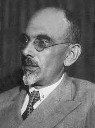
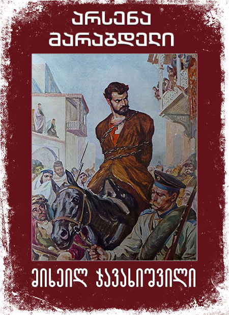

არსენა მარაბდელი
ინფორმაცია წიგნზე
ავტორი: მიხეილ ჯავახიშვილი
ჟანრი: რომანი, კლასიკა
გამოშვების თარიღი: 1933 წელი
აღწერა:
მიხეილ ჯავახიშვილის ისტორიული რომანი „არსენა მარაბდელი“ 1933-1936 წლებში შეიქმნა. იმ პერიოდის სისხლიანი რეპრესიების ფონზე რომანმა კიდევ უფრო დაამძიმა ხელისუფლების მწერლისადმი დამოკიდებულება. რომანში ნაჩვენებია ხალხის ბრძოლა ეროვნული და სოციალური თავისუფლებისთვის სწორედ მე-20 ს-ის პირველ ნახევარში
მიხეილ ჯავახიშვილი ( სხვა გვარი: ადამაშვილი, ადამაშვილი) (დ. 8 ნოემბერი, 1880 – გ. 30 სექტემბერი, 1937) იყო ქართველი მწერალი, რომელიც ითვლება მეოცე საუკუნის ერთ-ერთ საუკეთესო ქართველ მწერალად. მისი პირველი მოთხრობა გამოჩნდა 1903 წელს, მაგრამ შემდეგ მწერალი გრძელვადიან პაუზაში ჩავარდა, სანამ წერას დაუბრუნდა 1920-იანი წლების დასაწყისში. საბჭოთა იდეოლოგიური ზეწოლისადმი მისმა წინააღმდეგობამ მას სიცოცხლე დაუჯდა: ის სიკვდილით დასაჯეს იოსებ სტალინის დიდი წმენდის დროს და მისი ნაწერები აკრძალული იყო თითქმის ოცი წლით. რუსული და ქართული ლიტერატურის თანამედროვე ბრიტანელი მკვლევარის, დონალდ რეიფილდის სიტყვებით, „მისი ნათელი მოთხრობა, პირდაპირ მედიაში, მისი მხიარული იუმორი, დახვეწილი ირონია და ზნეობრივი გამბედაობა იმსახურებს შედარებას სტენდალის, გი დე მოპასანის ისტორიებთან. და ემილ ზოლა თანამედროვე ქართულ პროზაში მხოლოდ კონსტანტინე გამსახურდიას შეეძლო მიისწრაფვოდა იმავე საერთაშორისო დონეზე“.
ავტორის ხელმოწერა: